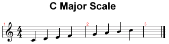

The major scale is the fundamental scale on which the whole theory of music.
It is characterized by a specific sequence of tones and semitones.
In particular, every note that up (the notes of the scale are 7), is separated by a
predetermined number of tones and semitones, which specifically is:
As you can see the distance between 7 ° and 8 ° (Tonic) is a half step, and this difference
mainly from the major scale relative minor, where the distance between 7 th and 8 th grade is
of a tone.
